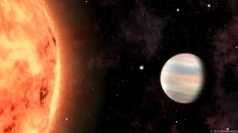

Fields I have Worked
EXTRASOLAR PLANETS
An extra-solar planet, also known as an exoplanet is any planet beyond our solar system. Most of the exoplanets orbit other stars, however some that do not orbit any star could also be free- floating within the universe, called Rogue planets. Our understanding of stars out-numbers planets was overthrown by the observations of Kepler and HST. Kepler has proven that there are more number of planets than stars in our universe. Image Source: nasa exoplanet exploration Even though, most of the exoplanets discovered so far are in a relatively small region of our galaxy. That is as far as the present telescopes have been able to probe. The closest known exoplanet to Earth, Proxima Centauri b, is still about four light-years away.
HOT JUPITERS

Hot Jupiters are very important in the context of extrasolar planets simply because they are easy to detect. Hot Jupiters are the most well-observed class of exoplanets. Their physical size and their atmospheric scale height are relatively large, which provides the opportunity to obtain observations related to atmospheric parameters with Image Source: nasa exoplanet explorationhigh signal-to-noise ratio (Seager & Deming, 2010). Hot Jupiters are good test cases for exoplanet characterisation. Current challenge is to explain diversity in observed properties.
MY WORK
More than four thousand planets have been discovered orbiting other stars outside our solar system in the last two decades. Going beyond discovering more such planets the recent
focus of the astronomy community is to attempt to study the atmosphere of those exoplanets. We have used a publicly available and computationally efficient software named PLanetary
Atmospheric Transmission for Observer Noobs (PLATON), which calculates transmission spectra for exoplanets and extracts atmospheric characteristics based on their observed spectra.
Using PLATON, we have studied the dependence of transit spectra on the radius of the parent star, mass and radius of the planet, and atmospheric pressure, temperature and composition
of the planet. Then we have determined the absorption signature of various chemical species, such as, sodium, water, ammonia, methane, carbon dioxide, and several others by simulating
transit spectra using PLATON. We studied how the absorption signature of a given species changes due to a change of the abundance of that and other species as well as the atmospheric
temperature. Finally, we have retrieved the planetary and atmospheric parameters of two exoplanets from published data.
Recent work is focussed on JWST mock observations using PandExo. Side by side I am also learning Picaso which can be used to study clouds in the atmsophere of Extrasolar planets.